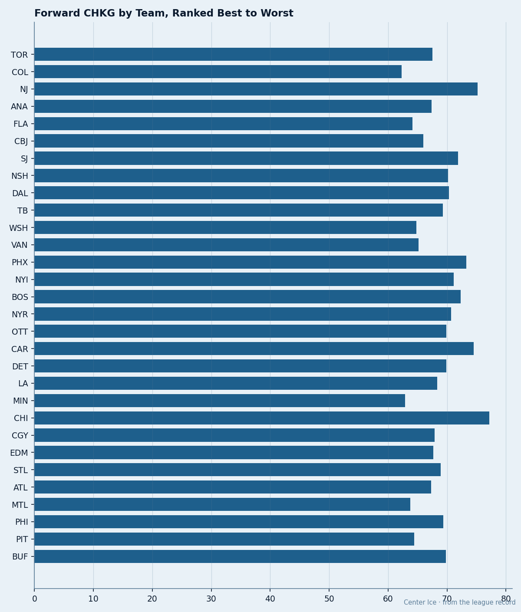

CGY
CGY EDM
EDM TB
TB STL
STLElite Checkers, Nine Minutes a Night: 10 Players the Book Grades 88+ on Defense Who Play Under 15 Minutes
The Book's checking grade says these men stop goals. Their coaches give them fourth-line shifts and call it a night.
 Doug ReimerAnalytics editor, ex-video coach · The Slot Report
Doug ReimerAnalytics editor, ex-video coach · The Slot ReportThe Bureau's Book gives every skater a checking grade from 50 to 99. Ten players currently sit at 88 or higher and play fewer than 15 minutes a night.
I pulled every skater in the league graded 88+ on CHKG and cross-referenced against current-season minutes per game. The cutoff: players appearing in at least 16 of their club's games this season, so we are not looking at call-ups averaging two shifts a night.

The ten men
| Player | Team | Pos | CHKG | Overall | MPG | GP |
|---|---|---|---|---|---|---|
 Steve Begin64 Steve Begin64 | BUF | C | 92 | 68 | 9.0 | 31 |
| Bob Boughner | CAR | D | 92 | 70 | 11.0 | 28 |
| Robyn Regehr | CGY | D | 91 | 72 | 12.0 | 31 |
| Georges Laraque | EDM | RW | 91 | 69 | 10.0 | 16 |
| Sheldon Keefe | TB | RW | 91 | 73 | 12.0 | 31 |
 Danny Markov72 Danny Markov72 | CAR | D | 89 | 76 | 12.0 | 25 |
| Matt Walker | STL | D | 89 | 66 | 13.0 | 22 |
 Willie Mitchell66 Willie Mitchell66 | MIN | D | 86 | 68 | 11.0 | 33 |
| Adam Hall | NSH | RW | 86 | 75 | 14.0 | 31 |
| Hal Gill | BOS | D | 86 | 72 | 14.0 | 31 |
Steve Begin grades 92 on checking. That ties  Derian Hatcher79 for the highest mark in the Book. Hatcher plays 30.0 minutes a night for
Derian Hatcher79 for the highest mark in the Book. Hatcher plays 30.0 minutes a night for  Detroit Red Wings. Begin plays 9.0 for
Detroit Red Wings. Begin plays 9.0 for  Buffalo Sabres. Begin's overall is 68; the Development Index has him below his base at -3, which tracks. But checking is not a skill that decays the way speed does. A 92-grade checker at nine minutes is a resource parked on the third line while the coach asks his top pair to carry 30 a night.
Buffalo Sabres. Begin's overall is 68; the Development Index has him below his base at -3, which tracks. But checking is not a skill that decays the way speed does. A 92-grade checker at nine minutes is a resource parked on the third line while the coach asks his top pair to carry 30 a night.
Bob Boughner at  Carolina Hurricanes sits in the same slot. CHKG 92, 11.0 minutes, 28 games played. Danny Markov, his own defensive partner, also carries a checking grade above 85 and plays 12.0. The Hurricanes average 74.5 on the team checking column, the second-highest in the league, and allow 3.88 goals a game. That is middle of the pack. Two 92-grade defensemen at 11 and 12 minutes produce the same result as teams with half that talent.
Carolina Hurricanes sits in the same slot. CHKG 92, 11.0 minutes, 28 games played. Danny Markov, his own defensive partner, also carries a checking grade above 85 and plays 12.0. The Hurricanes average 74.5 on the team checking column, the second-highest in the league, and allow 3.88 goals a game. That is middle of the pack. Two 92-grade defensemen at 11 and 12 minutes produce the same result as teams with half that talent.
The control group
The proper comparison is the player with an equivalent checking grade who actually gets the minutes. Hatcher at CHKG 92 plays 30.0 for Detroit Red Wings.  Shane Doan80 at
Shane Doan80 at  Phoenix Coyotes, CHKG 91, plays 16.0 at right wing.
Phoenix Coyotes, CHKG 91, plays 16.0 at right wing.  San Jose Sharks carries high-checking defensemen who play 30-plus minutes and allows 3.44 a night. The coaches who get defensive results either find 25-plus minutes for their 90-grade checkers, or they build a system that doesn't need them to play. The ten men above sit in neither category.
San Jose Sharks carries high-checking defensemen who play 30-plus minutes and allows 3.44 a night. The coaches who get defensive results either find 25-plus minutes for their 90-grade checkers, or they build a system that doesn't need them to play. The ten men above sit in neither category.
Does checking prevent goals?
The team-level data contradicts the assumption that more checking talent means fewer goals.

| Team | Avg CHKG | GA/GP | Rank in GA |
|---|---|---|---|
| CHI | 77.2 | 4.13 | 22nd |
| NJ | 75.2 | 3.10 | 3rd |
| CAR | 74.5 | 3.88 | 16th |
| PHX | 73.3 | 3.67 | 13th |
| BOS | 72.3 | 3.81 | 15th |
| COL | 62.3 | 2.97 | 2nd |
| MIN | 62.9 | 4.00 | 21st |
| MTL | 63.8 | 4.41 | 28th |
| FLA | 64.1 | 3.29 | 5th |
| PIT | 64.4 | 4.52 | 30th |
 Colorado Avalanche has the lowest average checking grade in the league at 62.3. They allow 2.97 goals a game, second only to
Colorado Avalanche has the lowest average checking grade in the league at 62.3. They allow 2.97 goals a game, second only to  Toronto Maple Leafs at 2.91.
Toronto Maple Leafs at 2.91.  Chicago Blackhawks has the highest average checking grade at 77.2 and allows 4.13, the 22nd-worst mark. The correlation between team checking talent and goals-against is, to put it politely, absent.
Chicago Blackhawks has the highest average checking grade at 77.2 and allows 4.13, the 22nd-worst mark. The correlation between team checking talent and goals-against is, to put it politely, absent.
Good defensive teams get those minutes to the right players in the right situations.  New Jersey Devils checks well and wins defensively because
New Jersey Devils checks well and wins defensively because  Martin Brodeur91 is in net and the system is structured around it. Colorado Avalanche checks poorly and wins defensively because their structure and goaltending absorb the deficit. Chicago Blackhawks has the raw materials and produces neither structure nor goaltending.
Martin Brodeur91 is in net and the system is structured around it. Colorado Avalanche checks poorly and wins defensively because their structure and goaltending absorb the deficit. Chicago Blackhawks has the raw materials and produces neither structure nor goaltending.
The mis-slot pattern
This connects directly to the mis-slot audit filed on December 4.  Rostislav Klesla82 grades 81 and plays the third pair at Toronto Maple Leafs. Carlo Colaiacovo71 grades 70 and plays five slots. The Klesla case is a deployment error on the blue line; the Begin and Boughner cases are the same error at center and on defense across ten other clubs.
Rostislav Klesla82 grades 81 and plays the third pair at Toronto Maple Leafs. Carlo Colaiacovo71 grades 70 and plays five slots. The Klesla case is a deployment error on the blue line; the Begin and Boughner cases are the same error at center and on defense across ten other clubs.
The Bureau's Development Index flags Steve Begin at -3, meaning his overall has slid from 73 to 68 this season. His checking grade has not moved. He is the same player who graded 92 a year ago. His coach simply stopped needing him for more than nine minutes. The mis-allocation is a decision about how much ice he gets, not a change in the player.
What the coaches get back
The clubs that play their elite checkers heavily tend to allow fewer goals per minute of top-pair ice. Detroit Red Wings has Hatcher at 30.0 and allows 3.90 a night. San Jose Sharks carries high-checking defensemen at 30-plus minutes and allows 3.44. Neither team is elite defensively, but both get more return per checking-minute than Carolina Hurricanes, which has two 89+ checkers at 11 and 12 minutes and allows 3.88.
The question for every coach who has a 90+ checker sitting on the fourth line: what is the 14th minute of your third-pair defenseman producing that the 20th minute of your 92-grade center is not? The Book cannot answer that. The coach can.